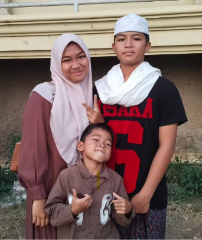
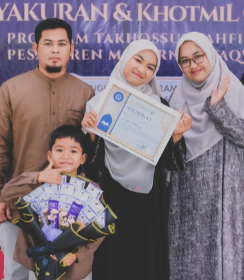
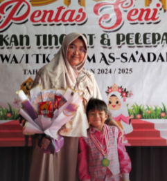
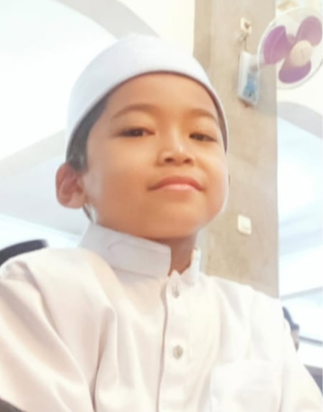
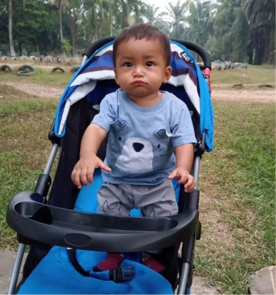
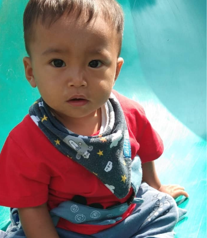

Happy 8th
Birthday, Dede!
Hari ini dunia punya alasan kecil untuk tersenyum lebih lebar.
Semoga langkah kecilmu
selalu dijaga Allah. 🤍
Semoga Dede tumbuh jadi anak yang makin pintar, sehat, baik hati, dan selalu punya semangat untuk belajar dan mencoba hal-hal baru.
Semoga Dede selalu berbakti kepada Mama, Papa, dan sayang kepada kakak-kakaknya. Semoga Allah menjaga setiap langkah Dede, melapangkan rezekinya, mempertemukan Dede dengan orang-orang baik, dan menjadikan Dede anak yang membawa kebahagiaan untuk keluarga.
Semoga apa pun yang Dede cita-citakan nanti,
pelan-pelan Allah bukakan jalannya. Aamiin. ✨
Foto-foto Dede
yang selalu bikin Kakak senyum.






Putar lagu sambil
baca suratnya. 🎧
Taruh file lagu favorit Dede di folder music dengan nama song1.mp3, song2.mp3, dan song3.mp3. Tombol di bawah akan langsung memutarnya.
Happy Birthday, Iyash!
8 tahun hari ini.
Semoga tahun-tahun berikutnya penuh cerita yang indah.